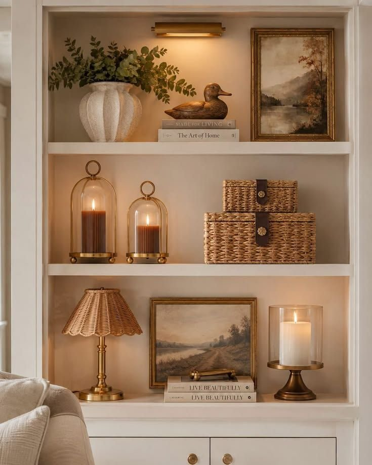
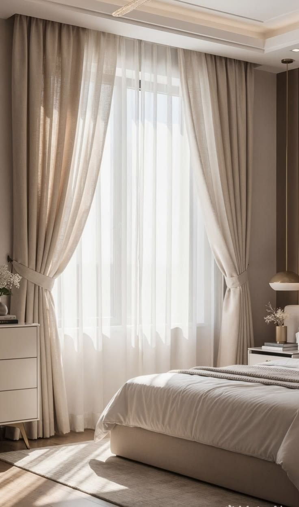
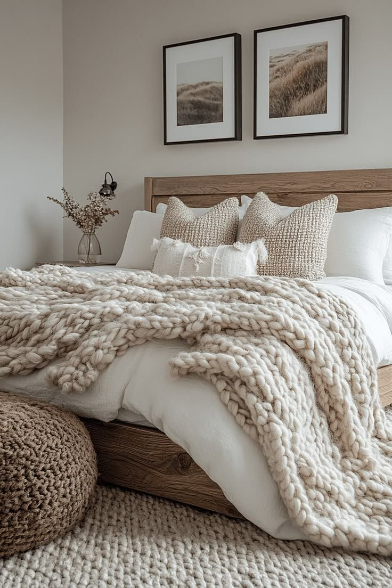
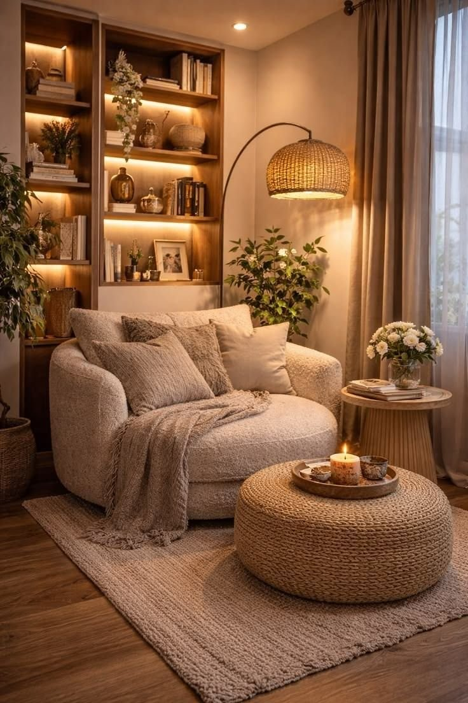
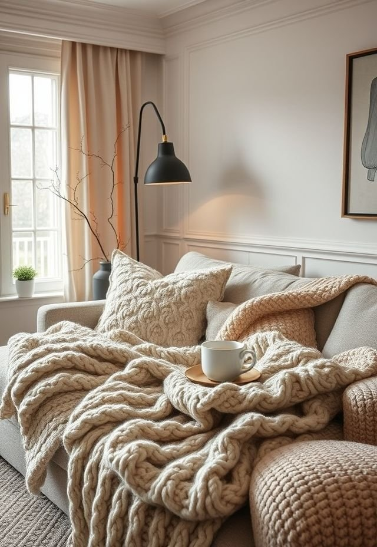
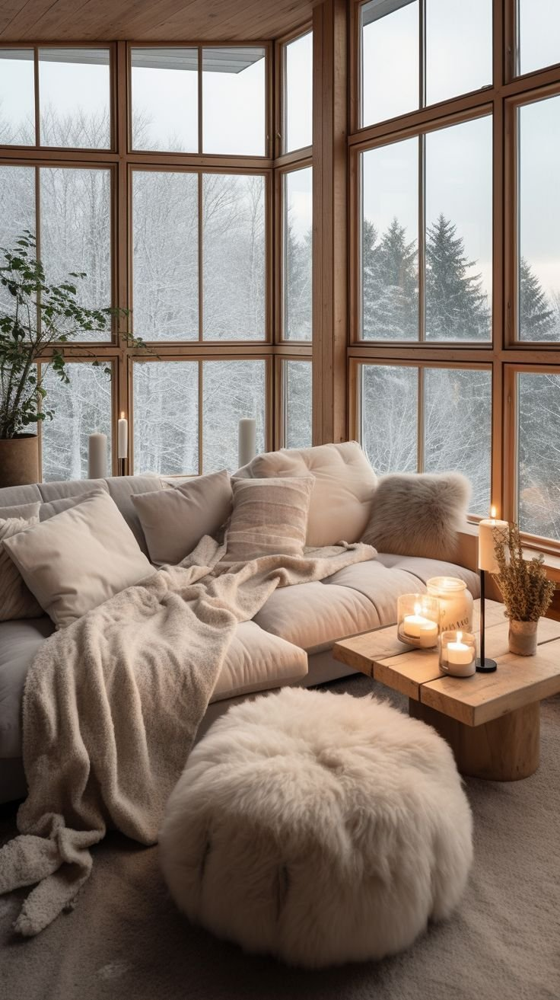

A cozy winter home doesn't require redecorating every room from scratch. Most of what makes a space feel warmer during the colder months comes down to texture, lighting, and a handful of consistent colors layered in gradually, rather than a single dramatic overhaul.
None of the ideas below demand a big budget or a lot of time. Most work as small, individual additions that can be layered in over a weekend or two.

14 Winter Decor Ideas for a Cozy Home
1. Layer Chunky Throws Across Seating
Start with the simplest change on this entire list.
A chunky knit, wool, boucle, fleece, or soft cotton throw draped over a sofa or accent chair, left slightly imperfect rather than folded too precisely, makes a room feel more relaxed almost instantly.
Mixing one chunky throw with a smoother pillow or linen cushion adds real visual depth through contrast, just avoid piling on five different blanket colors at once, since the goal is a decorated home, not a textile display.
2. Build a Cozy Winter Color Palette
The final idea ties everything else together.
Rather than decorating each room separately, carrying one consistent winter palette throughout the home, cream, warm beige, brown, and charcoal, or soft white, taupe, muted olive, and natural wood, keeps the whole house feeling connected.
A consistent palette also prevents a home from feeling like several unrelated decorating projects competing for attention room to room.
3. Style Shelves With Books and Meaningful Objects
Shelves turn into clutter magnets fast if they're not approached with some intention.
Books, ceramics, framed artwork, baskets, wood, and a few seasonal pieces, stacked horizontally with a small object on top and breathing room left around larger pieces, build genuine rhythm.
Using objects that actually hold meaning, rather than items bought purely because they matched, makes the whole shelf feel more personal and considered.

4. Give the Dining Table a Softer Winter Look
An elaborate holiday tablescape isn't necessary to make a dining table feel seasonal.
A simple winter centerpiece built from a linen runner, ceramic plates, wooden serving pieces, candles, and a bit of greenery reads as approachable rather than overly formal.
A bowl of seasonal fruit, apples, pears, pomegranates, citrus, works just as well as an easy centerpiece, adding color without the table feeling over-decorated or crowded.
5. Create a Cozy Winter Mantel
A mantel can become the clear visual anchor of a winter living room.
Starting with one larger focal point, a mirror, a piece of artwork, a wreath, then layering smaller elements around it, builds the display in a logical order.
Keeping some empty space between objects matters just as much as what gets placed there; a mantel reads better when the eye has room to rest than when every inch is filled.
6. Use Heavier Curtains for Winter Warmth
Curtains often get overlooked when thinking about winter decor, despite how much they actually contribute to a room's feel.
Replacing thin summer curtains with heavier linen, velvet, cotton, or thermal panels gives a window more visual weight, making the whole room feel more enclosed and comfortable.
Layering sheer curtains underneath a heavier outer panel keeps the room bright during the day while still allowing a more cocoon-like feeling at night.

7. Make the Bedroom Feel Like a Winter Retreat
A bedroom deserves extra attention during winter, starting with the bed itself since it takes up so much visual space.
A heavier comforter, a textured duvet, soft pillows, and a throw at the foot of the bed build real warmth without requiring a repaint.
Soft taupes, creams, muted browns, dusty greens, and deep charcoal all suit a winter bedroom well, the goal isn't to make the room darker, just softer.

8. Add Warm Wood Wherever a Room Feels Cold
When a room leans heavily on white, gray, glass, or metal, adding wood softens the whole space.
A wooden stool, side table, cutting board, picture frame, tray, or decorative bowl all do this job without needing a full furniture swap.
Mixing slightly different wood tones, rather than matching everything exactly, often reads as more natural, adding wood in two or three spots is usually enough to make it feel intentional.
9. Add Candles for Glow and Atmosphere
Candles can genuinely change the feel of an entire evening.
Placed on a coffee table, dining table, mantel, or bedside table, and grouped at a few different heights, they create a noticeably stronger visual effect than a single candle on its own.
Warm, subtle scents, cedar, vanilla, amber, sandalwood, cinnamon, suit winter particularly well, as long as the candles stay a layer of atmosphere rather than the room's only light source.

10. Decorate With Natural Winter Elements
Winter decorating doesn't require anything manufactured to feel seasonal.
Branches, dried flowers, pinecones, eucalyptus, evergreen stems, firewood, stone, or unfinished wood all bring real texture into a room with very little effort.
A few branches in a large vase, a bowl of pinecones, or a bit of greenery along a mantel keeps the arrangement simple while still balancing a room that leans heavily on glass, metal, or smooth furniture.

11. Create a Warm Winter Reading Corner
Every home benefits from one small corner built specifically for disappearing into for an hour.
A comfortable chair near a floor lamp or window, with a throw, a small side table, and a basket for books nearby, is really the whole setup.
It gives an otherwise empty corner an actual purpose, turning unused space into somewhere genuinely worth sitting.
12. Bring In a Soft Area Rug
Cold floors kill a cozy mood almost instantly.
A rug visually anchors furniture while adding real softness underfoot, and it's worth considering for a living room, bedroom, reading nook, or entryway alike.
Layering a smaller textured rug over a larger neutral one, where the room allows for it, adds even more warmth without overwhelming the space with pattern.
13. Add Winter Warmth With Layered Pillows
Pillows can completely shift the personality of a sofa.
Combining different shapes and textures, velvet, wool, boucle, corduroy, linen, knitted fabric, tends to work better for winter than simply swapping in matching seasonal covers.
Keeping the color palette connected to the rest of the room, with just one or two cushions introducing a deeper shade like chocolate brown or taupe, is often enough to make a whole room feel warmer.
14. Use Warm Lamps Instead of Ceiling Lights
This idea deserves its own spot because it genuinely changes how a room feels.
Replacing harsh overhead lighting with warm table lamps, floor lamps, sconces, or portable lights shifts a room's whole mood, especially once the sun goes down.
A single lamp placed beside the sofa tends to create more real warmth than one large ceiling fixture ever could, switching off the overhead light in the evening and relying on lamps instead makes a room feel noticeably more atmospheric.
What Makes a Home Feel Cozy in Winter
Texture does most of the heavy lifting in a winter-ready home, chunky knits, soft rugs, warm wood, and layered lighting all contribute more to the feeling of coziness than any single big purchase could. A consistent, warm color palette carried through the house also helps, without requiring every room to be decorated identically.

Final Thoughts
None of these fourteen ideas actually require a full seasonal overhaul to make a real difference. A chunky throw, a few warm lamps, and a consistent color palette carried through the home do most of the actual work.
The coziest homes tend to be the ones genuinely built on restraint rather than excess, a few well-chosen, well-placed pieces will always outperform a room crowded with every winter item available.